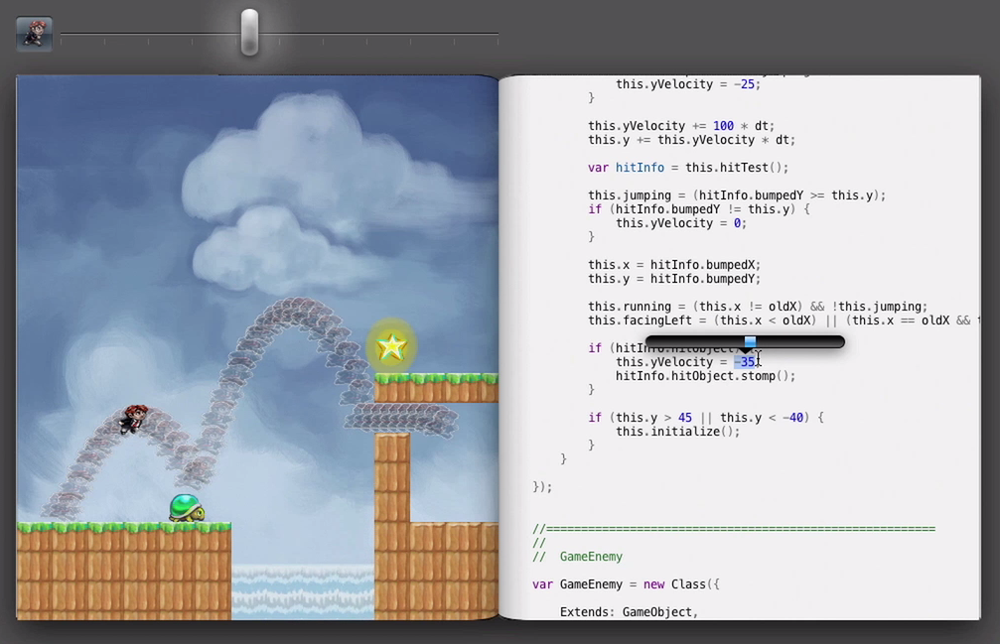

###### Интерактивная разработка на Clojure Бутов Андрей
###### Обо мне - фуллстек разработчик с уклоном в бэкенд - ~~не осилил ООП~~ предпочитаю ФП - https://github.com/abtv - https://twitter.com/2abtv
Когда-то так выглядела сборка проекта  time wasted: 2m 35s
Интерактивная разработка игры (Bret Victor) 
Интерактивный API (GitHub) 
Интерактивная разработка = быстрая обратная связь
###### Какие сейчас есть способы сделать разработку интерактивной? - использовать Postman/Insomnia/etc для API - использовать watcher для запуска тестов (jest --watchAll) - nodemon (JS backend), hot reload (JS frontend) - использовать Quokka (JS only) - __использовать__ __REPL__
###### Разработка* на Clojure через REPL - пишем код, выполняем его, изменяем его на лету, без потери состояния _работающей_ программы - результаты работы программы мгновенно видны в процессе написания кода \*процесс деплоя одинаков для Java и Clojure
##### Сейчас мы быстренько изучим Clojure и посмотрим на него в деле
#### Синтаксис ```clojure Правило I Все является выражением и возвращает значение 1 "hello" + () Правило II () ;список – это все, что находится в круглых скобках (f x y);f - вызов функции, макрос или специальная форма (+ 1 2) ;1 + 2 => 3 (+ 1 2 4) ;1 + 2 + 4 => 7 ```
#### Структуры данных ```clojure (def age 34) ;java.lang.Long (def height 191.5) ;java.lang.Double (def first-name "Andrey");String (def history ["C++" "C#" "F#" "Scala" "JS"]);vector (def stop-words #{"a" "an" "is" "are"}) ;set (def user {:first-name first-name :last-name "Butov"} ;hashmap ```
#### Работа с данными ```clojure (def user {:first-name first-name :last-name "Butov"} (:first-name user) ;=> "Andrey" (def cool (merge user {:likes ["Clojure"]})) ;new value (= user cool) ;=> false ```
#### Функциональное программирование ```clojure ;длинный вариант (let [numbers (range 0 100) increased-numbers (map inc numbers) sum-numbers (reduce + increased-numbers)] sum-numbers) ;короткий вариант (->> (range 0 100) (map inc) (reduce +)) ;sum of [1..100] ```
## Время интерактива!
## Спасибо! - Bret Victor https://vimeo.com/36579366 - https://www.getpostman.com - https://quokkajs.com - https://nodejs.org/api/repl.html - Cursive(IntelliJ Idea)/Cider(Emacs)/ Fireplace(Vim)/VSCode/Atom/etc - https://github.com/reagent-project/reagent-template - Demo https://github.com/abtv/github-search